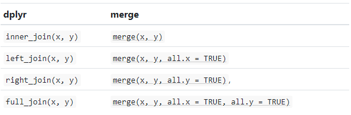

Code
library(tidyverse)In section you will learn you to wrangle data with two popular R-packages tidyr and dplyr and both are come with tidyverse, an collection of several R packages designed for data science.
tidyr helps to create tidy data that enables you to work with tidy data formats which are easy to manipulate, model and visualize, and have a specific structure. It follows a set of rules for organizing variables, values, and observations into tables, with each column representing a variable and each row representing an observation. Tidy data makes it easier to perform data analysis and visualization and is the preferred format for many data analysis tools and techniques.
tidyr functions fall into five main categories:
Pivotting which converts between long(pivot_longer()) and wide forms (pivot_wider()), replacing
Rectangling, which turns deeply nested lists (as from JSON) into tidy tibbles.
Nesting converts grouped data to a form where each group becomes a single row containing a nested data frame
Splitting and combining character columns. Use separate() and extract() to pull a single character column into multiple columns;
Make implicit missing values explicit with complete(); make explicit missing values implicit with drop_na(); replace missing values with next/previous value with fill(), or a known value with replace_na().
dplyr is part of a larger [tidyverse]( https://www.tidyverse.org/. It provides a grammar for data manipulation and a set of functions to clean, process, and aggregate data efficiently. Some of the key features of dplyr include:
A tibble data structure, which is similar to a data frame but is designed to be more efficient and easier to work with. A set of verbs for data manipulation, including filter() for subsetting rows, arrange() for sorting rows, select() for selecting columns, mutate() for adding new columns, and summarize() for aggregating data. A chainable syntax with pipe (%>%) that makes it easy to perform multiple operations in a single line of code.Support for working with remote data sources, including databases and big data systems. Overall, dplyr is a popular and widely used package for data manipulation in R and is known for its simplicity and ease of use.
In addition to data frames/tibbles, dplyr makes working with following packages:
dtplyr: for large, in-memory datasets. Translates your dplyr code to high performance data.table code.
dbplyr: for data stored in a relational database. Translates your dplyr code to SQL.
sparklyr: for very large datasets stored in Apache Spark.
Here below data Wrangling with dplyr and tidyr Cheat Sheets:

 {fig-dplyr_tidyr_02}
{fig-dplyr_tidyr_02}
In addition to tidyr, and dplyr, there are five packages (including stringr and forcats) which are designed to work with specific types of data:
lubridate for dates and date-times.
hms for time-of-day values.
blob for storing blob (binary) data
You can install the tidyverse with a following line of code:
install.packages(“tidyverse”)
library(tidyverse)In this exercise we will use following CSV files:
usa_division.csv: USA division names with IDs
usa_state.csv: USA State names with ID and division ID.
usa_corn_production.csv USA grain crop production by state from 2012-2022
gp_soil_data.csv: Soil carbon with co-variate from four states in the Greatplain region in the USA
usa_geochemical_raw.csv: Soil geochemical data for the USA, but cleaned
We will use read_csv() function of readr package to import data as a Tidy data.
# Create a data folder
dataFolder<-"E:/Dropbox/GitHub/Data/USA/"
# Load data
div<-read_csv(paste0(dataFolder, "usa_division.csv"))
state<-read_csv(paste0(dataFolder, "usa_state.csv"))
corn<-read_csv(paste0(dataFolder, "usa_corn_production.csv"))
soil<-read_csv(paste0(dataFolder, "gp_soil_data.csv"))Before starting this tutorial, I like to brief you about the Pipe Operator. This is the most important operator for data wrangling in R. The pipe operator, written as %>%, has been a longstanding feature of the magrittr package for R. It takes the output of one function and passes it into another function as an argument. This allows us to link a sequence of analysis steps. In this tutorial, you can see exactly how this works in a real example. (Source:https://towardsdatascience.com/an-introduction-to-the-pipe-in-r-823090760d64)
In R we use base::merge() function to merge two dataframes. This function is present inside join() function of dplyr package. The most important condition for joining two dataframes is that the column type should be the same of “key” variable by the merging happens. Types of base::merge() and several join() function of dplyr available in R are:
{fig-dplyr_join}
inner_join() is a function in the dplyr library that performs an inner join on two data frames. An inner join returns only the rows that have matching values in both data frames. If there is no match in one of the data frames for a row in the other data frame, the result will not contain that row.
inner_join(x, y, …..)
We will join state, division and USA corn production data one by one e using inner_join()* function;
corn_state = dplyr::inner_join(corn, state) corn_state_div = dplyr::inner_join(corn_state, div) We can run multiple inner_join() functions in a series with pipe %>% function:
mf.usa = dplyr::inner_join(corn, state) %>%
dplyr::inner_join(div) %>%
glimpse()Rows: 465
Columns: 6
$ STATE_ID <dbl> 1, 1, 1, 1, 1, 1, 1, 1, 1, 1, 1, 4, 4, 4, 4, 4, 4, 4, 4,…
$ YEAR <dbl> 2012, 2013, 2014, 2015, 2016, 2017, 2018, 2019, 2020, 20…
$ MT <dbl> 734352.8, 1101529.2, 1151061.8, 914829.3, 960170.7, 9968…
$ STATE_NAME <chr> "Alabama", "Alabama", "Alabama", "Alabama", "Alabama", "…
$ DIVISION_ID <dbl> 2, 2, 2, 2, 2, 2, 2, 2, 2, 2, 2, 4, 4, 4, 4, 4, 4, 4, 4,…
$ DIVISION_NAME <chr> "East South Central", "East South Central", "East South …Now we will will organize DIVISION_FIPS, DIVISION_NAME, STATE_FIPS, STATE_NAME, DIVISION_NAME, YEAR, MT will use relocate() function:
relocate(.data, …, .before = NULL, .after = NULL)
mf.usa<-dplyr::relocate(mf.usa, DIVISION_ID, DIVISION_NAME, STATE_ID, STATE_NAME, YEAR, MT,
.after = DIVISION_ID)
head(mf.usa)# A tibble: 6 × 6
DIVISION_ID DIVISION_NAME STATE_ID STATE_NAME YEAR MT
<dbl> <chr> <dbl> <chr> <dbl> <dbl>
1 2 East South Central 1 Alabama 2012 734353.
2 2 East South Central 1 Alabama 2013 1101529.
3 2 East South Central 1 Alabama 2014 1151062.
4 2 East South Central 1 Alabama 2015 914829.
5 2 East South Central 1 Alabama 2016 960171.
6 2 East South Central 1 Alabama 2017 996876.Now explore regions names with levels()
levels(as.factor(mf.usa$DIVISION_NAME))[1] "East North Central" "East South Central" "Middle Atlantic"
[4] "Mountain" "New England" "Pacific"
[7] "South Atlantic" "West North Central" "West South Central"The rename() function can be used to rename variables. We will rename STAT_ID to SATE_FIPS.
rename_with(.data, … .cols = …)
df.usa <- mf.usa %>%
dplyr::rename("STATE_FIPS" = "STATE_ID")
names(df.usa)[1] "DIVISION_ID" "DIVISION_NAME" "STATE_FIPS" "STATE_NAME"
[5] "YEAR" "MT" We can also all together inner_join(), relocate(), and rename() in a single line with pipe:
df.corn = dplyr::inner_join(corn, state) %>%
dplyr::inner_join(div) %>%
dplyr::relocate(DIVISION_ID, DIVISION_NAME, STATE_ID, STATE_NAME, YEAR, MT,
.after = DIVISION_ID) %>%
dplyr::rename("STATE_FIPS" = "STATE_ID") %>%
glimpse()Rows: 465
Columns: 6
$ DIVISION_ID <dbl> 2, 2, 2, 2, 2, 2, 2, 2, 2, 2, 2, 4, 4, 4, 4, 4, 4, 4, 4,…
$ DIVISION_NAME <chr> "East South Central", "East South Central", "East South …
$ STATE_FIPS <dbl> 1, 1, 1, 1, 1, 1, 1, 1, 1, 1, 1, 4, 4, 4, 4, 4, 4, 4, 4,…
$ STATE_NAME <chr> "Alabama", "Alabama", "Alabama", "Alabama", "Alabama", "…
$ YEAR <dbl> 2012, 2013, 2014, 2015, 2016, 2017, 2018, 2019, 2020, 20…
$ MT <dbl> 734352.8, 1101529.2, 1151061.8, 914829.3, 960170.7, 9968…dplyr::select() is used to extract a subset of columns from a data frame. It selects specific columns by name or by position. It is part of the dplyr package, which provides a set of functions that perform common data manipulation tasks efficiently and effectively.
select(.data, …)
Now we will use select() to create a dataframe with state names, year and production
df.state <- df.corn %>%
dplyr::select(STATE_NAME, YEAR, MT,) %>%
glimpse()Rows: 465
Columns: 3
$ STATE_NAME <chr> "Alabama", "Alabama", "Alabama", "Alabama", "Alabama", "Ala…
$ YEAR <dbl> 2012, 2013, 2014, 2015, 2016, 2017, 2018, 2019, 2020, 2021,…
$ MT <dbl> 734352.8, 1101529.2, 1151061.8, 914829.3, 960170.7, 996875.…The filter() function in dplyr is used to subset a data frame based on some condition(s) specified in the filter argument. The syntax for using filter is:
filter(df, condition1, condition2, …)
We will use filter() to extract data only for northeast regions (single criteria) from us.df. This code will return a filtered data frame containing only the rows where the DIVISION_NAME column is equal to “East North Central”.
df.01<-df.corn %>%
dplyr::filter(DIVISION_NAME == "East North Central")
levels(as.factor(df.01$STATE_NAME))[1] "Illinois" "Indiana" "Michigan" "Ohio" "Wisconsin"Filtering by multiple criteria within a single logical expression - select data from East North Central, South Central and Middle Atlantic Division
df.02<- df.corn %>%
dplyr::filter(DIVISION_NAME %in%c("East North Central","East South Central", "Middle Atlantic"))
levels(as.factor(df.02$STATE_NAME)) [1] "Alabama" "Illinois" "Indiana" "Kentucky" "Michigan"
[6] "Mississippi" "New Jersey" "New York" "Ohio" "Pennsylvania"
[11] "Tennessee" "Wisconsin" or we can use | which represents OR in the logical condition, any of the two conditions.
df.03<- df.usa %>%
dplyr::filter(DIVISION_NAME == "East North Central" | DIVISION_NAME == "Middle Atlantic")
levels(as.factor(df.03$STATE_NAME))[1] "Illinois" "Indiana" "Michigan" "New Jersey" "New York"
[6] "Ohio" "Pennsylvania" "Wisconsin" Following filter create a files for the Middle Atlantic Division only with New York state.
df.ny<-df.corn %>%
dplyr::filter(DIVISION_NAME == "Middle Atlantic" & STATE_NAME == "New York")
head(df.ny)# A tibble: 6 × 6
DIVISION_ID DIVISION_NAME STATE_FIPS STATE_NAME YEAR MT
<dbl> <chr> <dbl> <chr> <dbl> <dbl>
1 3 Middle Atlantic 36 New York 2012 2314570.
2 3 Middle Atlantic 36 New York 2013 2401189.
3 3 Middle Atlantic 36 New York 2014 2556391
4 3 Middle Atlantic 36 New York 2015 2143111.
5 3 Middle Atlantic 36 New York 2016 1867761.
6 3 Middle Atlantic 36 New York 2017 1983464.Following filters will select State where corn production (MT) is greater than the global average of production
mean.prod <- df.corn %>%
dplyr::filter(MT > mean(MT, na.rm = TRUE))
levels(as.factor(mean.prod$STATE_NAME)) [1] "Illinois" "Indiana" "Iowa" "Kansas" "Michigan"
[6] "Minnesota" "Missouri" "Nebraska" "North Dakota" "Ohio"
[11] "South Dakota" "Wisconsin" We use will & in the following filters to select states or rows where MT is greater than the global average of for the year 2017
mean.prod.2017 <- df.corn %>%
dplyr::filter(MT > mean(MT, na.rm = TRUE) & YEAR ==2017)
levels(as.factor(mean.prod.2017$STATE_NAME)) [1] "Illinois" "Indiana" "Iowa" "Kansas" "Minnesota"
[6] "Missouri" "Nebraska" "North Dakota" "Ohio" "South Dakota"
[11] "Wisconsin" Following command will select counties starting with “A”. filter() with grepl() is used to search for pattern matching.
state.a <- df.corn %>%
dplyr::filter(grepl("^A", STATE_NAME))
levels(as.factor(state.a $STATE_NAME))[1] "Alabama" "Arizona" "Arkansas"Summarize is a function in the dplyr used to collapse multiple values in a data frame into a single summary value. The function takes a data frame as input and returns a smaller data frame with summary statistics, such as mean, sum, count, etc. It can be used with other dplyr functions to manipulate and analyze data.
summarise(.data, …, .groups = NULL)
Center: mean(), median()
Spread: sd(), IQR(), mad()
Range: min(), max(), quantile()
Position: first(), last(), nth(),
Count: n(), n_distinct()
Logical: any(), all()
summarise() and summarize() are synonyms.
# mean
summarize(df.corn, Mean=mean(MT))# A tibble: 1 × 1
Mean
<dbl>
1 8360402.# median
summarise(df.corn, Median=median(MT))# A tibble: 1 × 1
Median
<dbl>
1 2072749.The scoped variants (_if, _at, _all) of summarise() make it easy to apply the same transformation to multiple variables. There are three variants.
summarise_at() affects variables selected with a character vector or vars()
summarise_all() affects every variable
summarise_if() affects variables selected with a predicate function
Following summarise_at() function mean of SOC from USA soil data (soil).
soil %>%
dplyr::summarise_at("SOC", mean, na.rm = TRUE)# A tibble: 1 × 1
SOC
<dbl>
1 6.35For multiple variables:
soil %>%
dplyr::summarise_at(c("SOC", "NDVI"), mean, na.rm = TRUE)# A tibble: 1 × 2
SOC NDVI
<dbl> <dbl>
1 6.35 0.437The summarise_if() variants apply a predicate function (a function that returns TRUE or FALSE) to determine the relevant subset of columns.
Here we apply mean() to the numeric columns:
soil %>%
dplyr::summarise_if(is.numeric, mean, na.rm = TRUE)# A tibble: 1 × 15
ID FIPS STATE_ID Longi…¹ Latit…² SOC DEM Aspect Slope TPI KFactor
<dbl> <dbl> <dbl> <dbl> <dbl> <dbl> <dbl> <dbl> <dbl> <dbl> <dbl>
1 238. 29151. 29.1 -104. 38.9 6.35 1632. 165. 4.84 0.00937 0.256
# … with 4 more variables: MAP <dbl>, MAT <dbl>, NDVI <dbl>, SiltClay <dbl>,
# and abbreviated variable names ¹Longitude, ²Latitudesoil %>%
dplyr::summarise(across(where(is.numeric), ~ mean(.x, na.rm = TRUE)))# A tibble: 1 × 15
ID FIPS STATE_ID Longi…¹ Latit…² SOC DEM Aspect Slope TPI KFactor
<dbl> <dbl> <dbl> <dbl> <dbl> <dbl> <dbl> <dbl> <dbl> <dbl> <dbl>
1 238. 29151. 29.1 -104. 38.9 6.35 1632. 165. 4.84 0.00937 0.256
# … with 4 more variables: MAP <dbl>, MAT <dbl>, NDVI <dbl>, SiltClay <dbl>,
# and abbreviated variable names ¹Longitude, ²LatitudeIt is better to select first our target numerical columns and then apply summarise_all():
soil %>%
# First select numerical columns
dplyr::select(SOC, DEM, NDVI, MAP, MAT) %>%
# get mean of all these variables
dplyr::summarise_all(mean, na.rm = TRUE)# A tibble: 1 × 5
SOC DEM NDVI MAP MAT
<dbl> <dbl> <dbl> <dbl> <dbl>
1 6.35 1632. 0.437 501. 8.88*mutate() adds new columns to a data frame based on existing columns or variables. The new columns are specified by expressions that use the values from one or more existing columns. The function returns a new data frame with the added columns and the same number of rows as the original data frame.
mutate(.data, …, .dots = NULL)
In this exercise we will create a new column (MT_1000) in df.corn dataframe dividing MT column by 1000
df.corn %>%
# get mean of all these variables
dplyr::mutate(MT_1000 = MT / 10000) %>%
glimpse()Rows: 465
Columns: 7
$ DIVISION_ID <dbl> 2, 2, 2, 2, 2, 2, 2, 2, 2, 2, 2, 4, 4, 4, 4, 4, 4, 4, 4,…
$ DIVISION_NAME <chr> "East South Central", "East South Central", "East South …
$ STATE_FIPS <dbl> 1, 1, 1, 1, 1, 1, 1, 1, 1, 1, 1, 4, 4, 4, 4, 4, 4, 4, 4,…
$ STATE_NAME <chr> "Alabama", "Alabama", "Alabama", "Alabama", "Alabama", "…
$ YEAR <dbl> 2012, 2013, 2014, 2015, 2016, 2017, 2018, 2019, 2020, 20…
$ MT <dbl> 734352.8, 1101529.2, 1151061.8, 914829.3, 960170.7, 9968…
$ MT_1000 <dbl> 73.43528, 110.15292, 115.10618, 91.48293, 96.01707, 99.6…group_by() allows you to group a data frame by one or multiple variables. After grouping, you can perform operations on the grouped data, such as aggregating with summarize(), transforming with mutate(), or filtering with filter(). The result of grouping is a grouped tibble, which is a data structure that retains the grouping structure and allows you to perform further operations on the grouped data.
group_by(.data, …, )
We can calculate global mean of USA corn production by division:
df.corn %>%
dplyr::group_by(DIVISION_NAME) %>%
dplyr::summarize(Prod_MT = mean(MT)) # A tibble: 9 × 2
DIVISION_NAME Prod_MT
<chr> <dbl>
1 East North Central 22246702.
2 East South Central 3143670.
3 Middle Atlantic 2036263.
4 Mountain 712629.
5 New England 15203.
6 Pacific 384083.
7 South Atlantic 1163065.
8 West North Central 27893388.
9 West South Central 3163740.We can also apply the group_by(), summarize() and mutate() functions with pipe to calculate mean of corn production in 1000 MT by division for the year 2022
df.corn %>%
dplyr::filter(YEAR==2020) %>%
dplyr::group_by(DIVISION_NAME) %>%
dplyr::summarize(Prod_MT = mean(MT)) %>%
dplyr::mutate(Prod_1000_MT = Prod_MT / 1000) # A tibble: 8 × 3
DIVISION_NAME Prod_MT Prod_1000_MT
<chr> <dbl> <dbl>
1 East North Central 22746952. 22747.
2 East South Central 3350119. 3350.
3 Middle Atlantic 1929554. 1930.
4 Mountain 651221. 651.
5 Pacific 391731. 392.
6 South Atlantic 1223075. 1223.
7 West North Central 28281091. 28281.
8 West South Central 3009964. 3010.We can also apply the group_by() and summarize() functions to calculate statistic of multiple variable:
soil %>%
group_by(STATE) %>%
summarize(SOC = mean(SOC),
NDVI = mean(NDVI),
MAP = mean(MAP),
MAT = mean(MAT))# A tibble: 4 × 5
STATE SOC NDVI MAP MAT
<chr> <dbl> <dbl> <dbl> <dbl>
1 Colorado 7.29 0.482 473. 6.93
2 Kansas 7.43 0.570 742. 12.6
3 New Mexico 3.51 0.301 388. 11.6
4 Wyoming 6.90 0.390 419. 5.27Following code will idenfify State where corn production data has not reported for the all years.
df.corn %>%
dplyr::group_by(STATE_NAME) %>%
dplyr::summarise(n = n()) %>%
dplyr::filter(n < 11) # A tibble: 7 × 2
STATE_NAME n
<chr> <int>
1 Connecticut 2
2 Maine 2
3 Massachusetts 2
4 Nevada 2
5 New Hampshire 2
6 Rhode Island 2
7 Vermont 2# Get the state namesPivoting a data frame in R involves transforming columns into rows and vice versa. In R, there are multiple ways to pivot a data frame, but the most common methods are:
tidyr::pivot_wider: The pivot_wider() function is used to reshape a data frame from a long format to a wide format, in which each row becomes a variable, and each column is an observation.
tidyr::pivot_longer: This is a relatively new function in the tidyr library that makes it easy to pivot a data frame from wide to long format. It is used to reshape a data frame from a wide format to a long format, in which each column becomes a variable, and each row is an observation.
tidyr::spread(): This function is also used to pivot data from long to wide format. It creates new columns from the values of one column, based on the values of another column.
tidy::gather() : This function is used to pivot data from wide to long format. It collects values of multiple columns into a single column, based on the values of another column.
pivot_wider() convert a dataset wider by increasing the number of columns and decreasing the number of rows.
corn.wider = df.corn %>%
dplyr::select (STATE_FIPS,STATE_NAME, YEAR, MT) %>%
# Drop state where reporting years less than 11
dplyr::filter(STATE_NAME!= 'Connecticut',
STATE_NAME!= 'Maine',
STATE_NAME!= 'Massachusetts',
STATE_NAME!= 'Nevada',
STATE_NAME!= 'New Hampshire',
STATE_NAME!= 'Rhode Island',
STATE_NAME!= 'Vermont') %>%
tidyr::pivot_wider(names_from = YEAR, values_from = MT) %>%
glimpse()Rows: 41
Columns: 13
$ STATE_FIPS <dbl> 1, 4, 5, 6, 8, 10, 12, 13, 16, 17, 18, 19, 20, 21, 22, 24, …
$ STATE_NAME <chr> "Alabama", "Arizona", "Arkansas", "California", "Colorado",…
$ `2012` <dbl> 734352.8, 158504.4, 3142399.9, 823003.5, 3412162.2, 610394.…
$ `2013` <dbl> 1101529.2, 229297.9, 4110445.0, 873298.1, 3261024.2, 733692…
$ `2014` <dbl> 1151061.8, 149359.9, 2517526.9, 398166.0, 3745681.8, 853485…
$ `2015` <dbl> 914829.3, 192034.1, 2045951.0, 239280.6, 3426640.9, 799837.…
$ `2016` <dbl> 960170.7, 273064.4, 3236003.9, 469924.8, 4071581.0, 708189.…
$ `2017` <dbl> 996875.6, 158504.4, 2765825.0, 339361.9, 4722109.3, 820946.…
$ `2018` <dbl> 970839.3, 111765.9, 2965479.6, 285638.1, 3929587.5, 611410.…
$ `2019` <dbl> 1138869.1, 217105.3, 3267247.5, 256045.5, 4061674.5, 736130…
$ `2020` <dbl> 1284291.8, 148801.1, 2827677.3, 285003.1, 3123348.9, 715301…
$ `2021` <dbl> 1407742.3, 82757.6, 3879292.8, 238772.6, 3768289.0, 803901.…
$ `2022` <dbl> 869233.9, 223531.8, 3054130.3, 89920.8, 3012091.0, 721144.1…The pivot_longer() function can be used to pivot a data frame from a wide format to a long format.
names(corn.wider) [1] "STATE_FIPS" "STATE_NAME" "2012" "2013" "2014"
[6] "2015" "2016" "2017" "2018" "2019"
[11] "2020" "2021" "2022" corn.longer<- corn.wider %>%
tidyr::pivot_longer(cols= c("2012", "2013", "2014", "2015", "2016", "2017", "2018", "2019", "2020", "2021", "2022"),
names_to = "YEAR", # column need to be wider
values_to = "MT") # data
head(corn.longer)# A tibble: 6 × 4
STATE_FIPS STATE_NAME YEAR MT
<dbl> <chr> <chr> <dbl>
1 1 Alabama 2012 734353.
2 1 Alabama 2013 1101529.
3 1 Alabama 2014 1151062.
4 1 Alabama 2015 914829.
5 1 Alabama 2016 960171.
6 1 Alabama 2017 996876.Following command combined select(), rename(), summarize() and pivot_longer() the data:
soil %>%
# First select numerical columns
dplyr::select(SOC, DEM, NDVI, MAP, MAT) %>%
# get summary statistics
dplyr::summarise_all(funs(min = min,
q25 = quantile(., 0.25),
median = median,
q75 = quantile(., 0.75),
max = max,
mean = mean,
sd = sd)) %>%
# create a nice looking table
tidyr::pivot_longer(everything(), names_sep = "_", names_to = c( "variable", ".value")) # A tibble: 5 × 8
variable min q25 median q75 max mean sd
<chr> <dbl> <dbl> <dbl> <dbl> <dbl> <dbl> <dbl>
1 SOC 0.408 2.77 4.97 8.71 30.5 6.35 5.05
2 DEM 259. 1175. 1593. 2238. 3618. 1632. 770.
3 NDVI 0.142 0.308 0.417 0.557 0.797 0.437 0.162
4 MAP 194. 354. 434. 591. 1128. 501. 207.
5 MAT -0.591 5.87 9.17 12.4 16.9 8.88 4.10 dplyr::spread() is equivalent to tidyr::pivot_wider():
df.corn %>%
dplyr::select (STATE_FIPS, YEAR, STATE_NAME, MT) %>%
tidyr::spread(YEAR, MT) # A tibble: 48 × 13
STATE…¹ STATE…² `2012` `2013` `2014` `2015` `2016` `2017` `2018` `2019`
<dbl> <chr> <dbl> <dbl> <dbl> <dbl> <dbl> <dbl> <dbl> <dbl>
1 1 Alabama 7.34e5 1.10e6 1.15e6 9.15e5 9.60e5 9.97e5 9.71e5 1.14e6
2 4 Arizona 1.59e5 2.29e5 1.49e5 1.92e5 2.73e5 1.59e5 1.12e5 2.17e5
3 5 Arkans… 3.14e6 4.11e6 2.52e6 2.05e6 3.24e6 2.77e6 2.97e6 3.27e6
4 6 Califo… 8.23e5 8.73e5 3.98e5 2.39e5 4.70e5 3.39e5 2.86e5 2.56e5
5 8 Colora… 3.41e6 3.26e6 3.75e6 3.43e6 4.07e6 4.72e6 3.93e6 4.06e6
6 9 Connec… 2.05e4 NA NA NA NA 2.32e4 NA NA
7 10 Delawa… 6.10e5 7.34e5 8.53e5 8.00e5 7.08e5 8.21e5 6.11e5 7.36e5
8 12 Florida 1.17e5 2.64e5 1.37e5 1.79e5 1.47e5 1.51e5 2.47e5 2.21e5
9 13 Georgia 1.42e6 2.07e6 1.34e6 1.24e6 1.43e6 1.10e6 1.27e6 1.42e6
10 16 Idaho 6.69e5 5.29e5 4.06e5 3.68e5 4.78e5 5.93e5 6.76e5 7.81e5
# … with 38 more rows, 3 more variables: `2020` <dbl>, `2021` <dbl>,
# `2022` <dbl>, and abbreviated variable names ¹STATE_FIPS, ²STATE_NAMEtidyr::gather(“key”, “value”, x, y, z) is equivalent to tidyr::pivot_longer()
corr.gathered<-corn.wider %>%
tidyr::gather(key = YEAR, value = MT, -STATE_FIPS, -STATE_NAME) %>%
glimpse()Rows: 451
Columns: 4
$ STATE_FIPS <dbl> 1, 4, 5, 6, 8, 10, 12, 13, 16, 17, 18, 19, 20, 21, 22, 24, …
$ STATE_NAME <chr> "Alabama", "Arizona", "Arkansas", "California", "Colorado",…
$ YEAR <chr> "2012", "2012", "2012", "2012", "2012", "2012", "2012", "20…
$ MT <dbl> 734352.8, 158504.4, 3142399.9, 823003.5, 3412162.2, 610394.…In this exercise you will learn how a clean data and make it ready for analysis, such as dealing with missing values, data with below detection limit and cleaning spatial characters. We will clean usa_geochemical_raw.csv data for further analysis. The data could be found here
## Create a data folder
dataFolder<-"E:/Dropbox/GitHub/Data/USA/"
df.geo<-read_csv(paste0(dataFolder,"usa_geochemical_raw.csv"))
meta.geo<-read_csv(paste0(dataFolder,"usa_geochemical_meta_data.csv"))glimpse(df.geo)Rows: 4,857
Columns: 56
$ A_LabID <chr> "C-328943", "C-328929", "C-328930", "C-329034", "C-328968",…
$ SiteID <dbl> 96, 208, 288, 656, 912, 1232, 1312, 1488, 1680, 1824, 2144,…
$ StateID <chr> "AL", "AL", "AL", "AL", "AL", "AL", "AL", "AL", "AL", "AL",…
$ Latitude <dbl> 31.3146, 33.8523, 31.2179, 33.0992, 34.5501, 34.3577, 31.06…
$ Longitude <dbl> -87.1166, -86.9041, -85.8788, -86.9976, -87.6779, -87.3130,…
$ CollDate <chr> "2/18/2009", "2/26/2009", "2/18/2009", "2/23/2009", "2/25/2…
$ LandCover1 <chr> "Planted/Cultivated", "Developed", "Planted/Cultivated", "F…
$ LandCover2 <chr> "Pasture/Hay", "Low Intensity Residential", "Fallow", "Ever…
$ A_Depth <chr> "0-20", "0-20", "0-20", "0-20", "0-5", "0-10", "0-25", "0-3…
$ A_Ag <chr> "<1", "<1", "<1", "<1", "<1", "<1", "<1", "<1", "<1", "<1",…
$ A_Al <chr> "0.87", "1.15", "1.05", "4.17", "1.51", "2.78", "2.14", "1.…
$ A_As <chr> "1.6", "1.5", "1.2", "3.7", "2.7", "4.3", "2.7", "3.7", "2.…
$ A_Ba <chr> "49", "118", "34", "316", "179", "160", "50", "185", "77", …
$ A_Be <chr> "0.2", "0.4", "0.2", "1.1", "0.6", "0.5", "0.3", "0.5", "0.…
$ A_Bi <chr> "0.08", "0.1", "0.07", "0.16", "0.09", "0.19", "0.16", "0.2…
$ A_C_Tot <chr> "0.71", "0.88", "0.65", "1.14", "1.36", "1.71", "0.89", "4.…
$ A_C_Inorg <chr> "N.D.", "N.D.", "N.D.", "N.D.", "N.D.", "N.D.", "N.D.", "N.…
$ A_C_Org <chr> "0.71", "0.88", "0.65", "1.14", "1.36", "1.71", "0.89", "4.…
$ A_Ca <chr> "0.07", "0.02", "0.05", "0.05", "0.03", "0.02", "0.04", "0.…
$ A_Cd <chr> "<0.1", "<0.1", "<0.1", "<0.1", "<0.1", "<0.1", "<0.1", "0.…
$ A_Ce <chr> "25.2", "27.8", "42.2", "41.7", "61.7", "32.6", "48.6", "44…
$ A_Co <chr> "1.2", "2.4", "1", "7", "6.1", "3.5", "1.5", "3.9", "1.3", …
$ A_Cr <chr> "11", "14", "8", "28", "17", "30", "17", "22", "22", "10", …
$ A_Cs <chr> "<5", "<5", "<5", "<5", "<5", "<5", "<5", "<5", "<5", "<5",…
$ A_Cu <chr> "4.4", "6.1", "10.9", "13.8", "5.2", "8.4", "15.1", "10.1",…
$ A_Fe <chr> "0.57", "0.54", "0.38", "2.38", "1.06", "1.66", "0.9", "1.1…
$ A_Ga <chr> "1.96", "2.24", "1.98", "9.53", "3.29", "6.43", "4.22", "4.…
$ A_Hg <chr> "0.01", "0.02", "<0.01", "0.03", "0.03", "0.05", "0.02", "0…
$ A_In <chr> "<0.02", "<0.02", "<0.02", "0.03", "<0.02", "0.02", "<0.02"…
$ A_K <chr> "0.09", "0.25", "0.05", "0.89", "0.44", "0.46", "0.1", "0.3…
$ A_La <chr> "11.4", "13.8", "23.4", "20.6", "21", "16.3", "22.3", "20.9…
$ A_Li <chr> "5", "8", "5", "21", "6", "17", "9", "18", "8", "4", "7", "…
$ A_Mg <chr> "0.03", "0.05", "0.03", "0.16", "0.06", "0.11", "0.04", "0.…
$ A_Mn <chr> "81", "191", "249", "228", "321", "96", "155", "598", "76",…
$ A_Mo <chr> "0.34", "0.36", "0.41", "1.19", "0.48", "0.66", "0.76", "0.…
$ A_Na <chr> "<0.01", "0.02", "<0.01", "0.06", "0.06", "0.05", "<0.01", …
$ A_Nb <chr> "5.2", "3.5", "3.4", "8.4", "0.6", "9.1", "7.1", "6.1", "2.…
$ A_Ni <chr> "3.2", "4.6", "4.2", "11.5", "6.9", "8.4", "7.7", "7", "3.8…
$ A_P <chr> "260", "170", "510", "200", "200", "190", "680", "440", "10…
$ A_Pb <chr> "6.8", "11.6", "7", "14", "14.5", "15.4", "10.5", "26.6", "…
$ A_Rb <chr> "8.4", "20", "5.7", "57.8", "24.6", "31.8", "9", "24.7", "1…
$ A_S <chr> "<0.01", "<0.01", "<0.01", "0.01", "0.01", "0.01", "<0.01",…
$ A_Sb <chr> "0.19", "0.23", "0.19", "0.62", "0.1", "0.46", "0.3", "0.4"…
$ A_Sc <chr> "1.6", "1.6", "1.4", "7.5", "2.2", "4.1", "3.1", "2.5", "3.…
$ A_Se <chr> "<0.2", "<0.2", "<0.2", "0.5", "<0.2", "0.4", "0.2", "0.4",…
$ A_Sn <chr> "0.5", "0.5", "0.6", "1.3", "0.4", "1", "1.1", "1.3", "1", …
$ A_Sr <chr> "6.2", "15.2", "3.9", "30.4", "21.9", "27.2", "6.7", "27.9"…
$ A_Te <chr> "<0.1", "<0.1", "<0.1", "<0.1", "<0.1", "<0.1", "<0.1", "<0…
$ A_Th <chr> "4.4", "3.2", "3", "8.2", "5", "7.1", "7.2", "5.9", "9.2", …
$ A_Ti <chr> "0.24", "0.13", "0.13", "0.31", "0.05", "0.28", "0.3", "0.1…
$ A_Tl <chr> "<0.1", "0.2", "<0.1", "0.5", "0.3", "0.4", "0.1", "0.3", "…
$ A_U <chr> "1.4", "1.1", "1", "2.4", "1.4", "2.2", "2", "1.9", "1.9", …
$ A_V <chr> "14", "16", "12", "56", "21", "37", "27", "30", "26", "22",…
$ A_W <chr> "0.3", "0.3", "0.4", "0.8", "<0.1", "0.7", "0.6", "0.4", "<…
$ A_Y <chr> "3.8", "4.9", "16.3", "8.8", "8.4", "6.7", "9.1", "9.4", "5…
$ A_Zn <chr> "15", "17", "19", "32", "32", "28", "26", "48", "20", "34",…glimpse(meta.geo)Rows: 54
Columns: 3
$ FIELS_ID <chr> "Lab_ID", "SiteID", "StateID", "CollDate", "LandCover1", "…
$ Description <chr> "unique identifier assigned by the analytical laboratories…
$ Unit <chr> NA, NA, NA, NA, NA, NA, "cm", "mg/kg", "wt. %", "mg/kg", "…We first create a file with limited number of variables using select functions and rename them:
mf.geo <- df.geo %>%
select(A_LabID, StateID, LandCover1, A_Depth, A_C_Tot, A_C_Inorg, A_C_Org, A_As, A_Cd, A_Pb, A_Cr) %>%
rename("LAB_ID"=A_LabID,
"LandCover" =LandCover1,
"Soil_depth" = A_Depth,
"Total_Carbon" = A_C_Tot,
"Inorg_Carbon" = A_C_Inorg,
"Organic_Carbon"= A_C_Org,
"Arsenic" = A_As,
"Cadmium" = A_Cd,
"Lead" = A_Pb,
"Chromium" = A_Cr) %>% glimpse()Rows: 4,857
Columns: 11
$ LAB_ID <chr> "C-328943", "C-328929", "C-328930", "C-329034", "C-3289…
$ StateID <chr> "AL", "AL", "AL", "AL", "AL", "AL", "AL", "AL", "AL", "…
$ LandCover <chr> "Planted/Cultivated", "Developed", "Planted/Cultivated"…
$ Soil_depth <chr> "0-20", "0-20", "0-20", "0-20", "0-5", "0-10", "0-25", …
$ Total_Carbon <chr> "0.71", "0.88", "0.65", "1.14", "1.36", "1.71", "0.89",…
$ Inorg_Carbon <chr> "N.D.", "N.D.", "N.D.", "N.D.", "N.D.", "N.D.", "N.D.",…
$ Organic_Carbon <chr> "0.71", "0.88", "0.65", "1.14", "1.36", "1.71", "0.89",…
$ Arsenic <chr> "1.6", "1.5", "1.2", "3.7", "2.7", "4.3", "2.7", "3.7",…
$ Cadmium <chr> "<0.1", "<0.1", "<0.1", "<0.1", "<0.1", "<0.1", "<0.1",…
$ Lead <chr> "6.8", "11.6", "7", "14", "14.5", "15.4", "10.5", "26.6…
$ Chromium <chr> "11", "14", "8", "28", "17", "30", "17", "22", "22", "1…Now, we filter the data where records have N.S. values INS:
mf.geo<- mf.geo %>%
filter(Soil_depth != "N.S." & Total_Carbon !="INS")Then, we will convert all N.D. values to empty string:
mf.geo[mf.geo=="N.D."]<- ""Here detection limits of As, Cd, Pb and Cr are 0.6, 0.1, 0.5, and 1 mg/kg, respectively. We will replace the values below detection limits by half of detection limits of these heavy-metals. Before that we have to remove “<” and convert the all
mf.geo <- mf.geo %>%
mutate_at(c("Arsenic", "Cadmium", "Lead", "Chromium"), str_replace, "<", "") %>%
mutate_at(c(5:11), as.numeric) %>% glimpse()Warning: There were 2 warnings in `mutate()`.
The first warning was:
ℹ In argument: `Inorg_Carbon = .Primitive("as.double")(Inorg_Carbon)`.
Caused by warning:
! NAs introduced by coercion
ℹ Run `dplyr::last_dplyr_warnings()` to see the 1 remaining warning.Rows: 4,809
Columns: 11
$ LAB_ID <chr> "C-328943", "C-328929", "C-328930", "C-329034", "C-3289…
$ StateID <chr> "AL", "AL", "AL", "AL", "AL", "AL", "AL", "AL", "AL", "…
$ LandCover <chr> "Planted/Cultivated", "Developed", "Planted/Cultivated"…
$ Soil_depth <chr> "0-20", "0-20", "0-20", "0-20", "0-5", "0-10", "0-25", …
$ Total_Carbon <dbl> 0.71, 0.88, 0.65, 1.14, 1.36, 1.71, 0.89, 4.59, 2.32, 0…
$ Inorg_Carbon <dbl> NA, NA, NA, NA, NA, NA, NA, NA, NA, NA, NA, NA, NA, NA,…
$ Organic_Carbon <dbl> 0.71, 0.88, 0.65, 1.14, 1.36, 1.71, 0.89, 4.59, 2.32, 0…
$ Arsenic <dbl> 1.6, 1.5, 1.2, 3.7, 2.7, 4.3, 2.7, 3.7, 2.9, 3.0, 2.3, …
$ Cadmium <dbl> 0.1, 0.1, 0.1, 0.1, 0.1, 0.1, 0.1, 0.2, 0.1, 0.1, 0.1, …
$ Lead <dbl> 6.8, 11.6, 7.0, 14.0, 14.5, 15.4, 10.5, 26.6, 13.2, 12.…
$ Chromium <dbl> 11, 14, 8, 28, 17, 30, 17, 22, 22, 10, 17, 10, 31, 11, …Now replace values below detection limits:
mf.geo["Arsenic"][mf.geo["Arsenic"] == 0.6] <- 0.3
mf.geo["Cadmium"][mf.geo["Cadmium"] == 0.1] <- 0.05
mf.geo["Lead"][mf.geo["Lead"] == 0.5] <- 0.25
mf.geo["Chromium"][mf.geo["Chromium"] == 1] <- 0.5Now will check the missing values of the data:
# counting unique, missing, and median values
Arsenic<- mf.geo %>% summarise(N = length(Arsenic),
na = sum(is.na(Arsenic)),
Min = min(Arsenic, na.rm = TRUE),
Max =max(Arsenic, na.rm = TRUE))
Cadmium<- mf.geo %>% summarise(N = length(Cadmium),
na = sum(is.na(Cadmium)),
Min = min(Cadmium, na.rm = TRUE),
Max =max(Cadmium, na.rm = TRUE))
Lead<- mf.geo %>% summarise(N = length(Lead),
na = sum(is.na(Lead)),
Min = min(Lead, na.rm = TRUE),
Max =max(Lead, na.rm = TRUE))
Chromium<- mf.geo %>% summarise(N = length(Chromium),
na = sum(is.na(Chromium)),
Min = min(Chromium, na.rm = TRUE),
Max =max(Chromium, na.rm = TRUE),
)
#bind the data
geo.sum<- bind_rows(Arsenic, Cadmium, Lead, Chromium)
#add.row.names
row.names(geo.sum) <- c("Arsenic", "Cadmium", "Lead", "Chromium")Warning: Setting row names on a tibble is deprecated.head(geo.sum)# A tibble: 4 × 4
N na Min Max
<int> <int> <dbl> <dbl>
1 4809 0 0.3 1110
2 4809 0 0.05 46.6
3 4809 0 0.25 2200
4 4809 0 0.5 3850 One of the common method of replacing missing values is na.omit. The function na.omit() returns the object with listwise deletion of missing values and function create new dataset without missing data.
newdata <- na.omit(mf.geo)
glimpse(newdata)Rows: 1,167
Columns: 11
$ LAB_ID <chr> "C-329044", "C-329030", "C-329081", "C-329079", "C-3289…
$ StateID <chr> "AL", "AL", "AL", "AL", "AL", "AR", "AR", "AZ", "AZ", "…
$ LandCover <chr> "Planted/Cultivated", "Developed", "Planted/Cultivated"…
$ Soil_depth <chr> "0-20", "0-20", "0-15", "0-7", "0-20", "0-10", "0-5", "…
$ Total_Carbon <dbl> 2.90, 4.78, 0.75, 1.69, 1.00, 1.00, 1.88, 0.31, 2.13, 0…
$ Inorg_Carbon <dbl> 1.8, 3.7, 0.1, 0.1, 0.2, 0.1, 0.1, 0.2, 0.9, 0.4, 0.1, …
$ Organic_Carbon <dbl> 1.1, 1.1, 0.7, 1.6, 0.8, 0.9, 1.8, 0.1, 1.2, 0.3, 0.8, …
$ Arsenic <dbl> 5.9, 7.9, 5.6, 7.2, 2.9, 4.8, 1.9, 5.3, 4.5, 5.0, 4.0, …
$ Cadmium <dbl> 0.20, 0.20, 0.05, 0.20, 0.05, 0.05, 0.05, 0.20, 0.20, 0…
$ Lead <dbl> 20.9, 19.1, 12.9, 21.1, 14.1, 11.9, 8.7, 26.8, 14.7, 24…
$ Chromium <dbl> 73, 68, 37, 42, 36, 31, 16, 36, 35, 28, 30, 25, 62, 21,…This function delete all records with missing values. Now newdata have only 1,167 records, since Inorg_Carbon variable has 3,690 missing values which all are omitted.
We can impute missing values in several ways. The easiest way to impute missing values is by replacing the mean values of the variable. The following code replace missing of Arsenic, Cadmium, Lead and Chromium with their mean values.
mf.geo.new<-mf.geo %>% mutate_at(vars(Arsenic, Cadmium, Lead, Chromium),~ifelse(is.na(.x), mean(.x, na.rm = TRUE), .x)) %>% glimpse()Rows: 4,809
Columns: 11
$ LAB_ID <chr> "C-328943", "C-328929", "C-328930", "C-329034", "C-3289…
$ StateID <chr> "AL", "AL", "AL", "AL", "AL", "AL", "AL", "AL", "AL", "…
$ LandCover <chr> "Planted/Cultivated", "Developed", "Planted/Cultivated"…
$ Soil_depth <chr> "0-20", "0-20", "0-20", "0-20", "0-5", "0-10", "0-25", …
$ Total_Carbon <dbl> 0.71, 0.88, 0.65, 1.14, 1.36, 1.71, 0.89, 4.59, 2.32, 0…
$ Inorg_Carbon <dbl> NA, NA, NA, NA, NA, NA, NA, NA, NA, NA, NA, NA, NA, NA,…
$ Organic_Carbon <dbl> 0.71, 0.88, 0.65, 1.14, 1.36, 1.71, 0.89, 4.59, 2.32, 0…
$ Arsenic <dbl> 1.6, 1.5, 1.2, 3.7, 2.7, 4.3, 2.7, 3.7, 2.9, 3.0, 2.3, …
$ Cadmium <dbl> 0.05, 0.05, 0.05, 0.05, 0.05, 0.05, 0.05, 0.20, 0.05, 0…
$ Lead <dbl> 6.8, 11.6, 7.0, 14.0, 14.5, 15.4, 10.5, 26.6, 13.2, 12.…
$ Chromium <dbl> 11, 14, 8, 28, 17, 30, 17, 22, 22, 10, 17, 10, 31, 11, …mf.geo.new %>%summarise(sum(is.na(Chromium)))# A tibble: 1 × 1
`sum(is.na(Chromium))`
<int>
1 0# save clean data
#write_csv(mf.geo.new,"usa_geochemical_clean.csv" )Create a folder in your computer name Homework.
Create a R-Markdown Project on this Homework directory
Create a R-Markdown documents (name homework_01.rmd) in this project directory and do all Tasks (1 to 23) using the data shown below.
Submit all codes and output as a HTML document (homework_02.html) before class of next week.
library(tidyverse)
bd_rice_production.csv: Yearly rice production of Bangladesh
bd_district.csv: District names with DISTRICT_ID and DIVISION_PCODE
bd_division.csv Division names and DIVISION_PCODE
raj_soil_data.csv: SRDI soil data for Rajshahi Division
bd_soil_data_raw.csv: SRDI soil data, not cleaned
Download all above data and save in your project directory. Use read_csv to load the data in your R-session. For example:
rice<-read_csv(“bd_rice_production.csv”))
Join rice production, and district file using dplyr::inner_join()
Then join division file using dplyr::inner_join()
Organize column as (DIVISION_ID, DIVISION_NAME, DISTRICT_ID, DISTRICT_NAME, YEAR, MT using dplyr::relocate()
Rename “DISTRICT_ID” to “DISTRICT_PCODE” using dplyr::rename()
Run all the above code using pipe function in a single line and create a data frame name df.rice.csv
Form df.rice data that you have created before, use select() function to create a data frame only with DISTRICT_NAME, YEAR and MT
Filter out the data from Rajshahi division using dplyr::filter()
Filter (Filtering by multiple criteria) all district in Rajshahi and Dhaka divisions using dplyr::filter()
Use | or OR in the logical condition in filter function, select data from any of the two divisions.
Apply filter create a files for the Rajshai Division only with Bogra District.
Select districts where rice production (MT) is greater than the global average
Use & to select district where MT is greater than the global average of for the year 2018-2019
Select districts starting with “P”
Use raj_soil data to calculate mean of SOM using dplyr::summarise_at() function
Use bd_soil data to calculate mean of SOM and NDVI using dplyr::summarise_at() function
Use dplyr::summarise_if() to calculate mean() to the numeric columns
Select numerical columns (pH,SOM, DEM, NDVI, NDFI) and then apply dplyr::summarise_all()*to calculate mean of these variables
Create a new column (MT_1000) in df.rice dataframe dividing MT column by 1000 using mutate()
Apply the group_by(), summarize()** and mutate() functions with pipe to calculate mean of corn production in 1000 MT by division for the year 2018-2019
Use df.rice data to create a wider data frame using tidyr::pivot_wider() function
Convert rice.wider data to a longer format use tidyr::pivot_longer()
Clean bd_soil_data_raw.csv and save as bd_soil_data.final.csv. Follow the steps you have learned from “Cleaning a messy data” section.